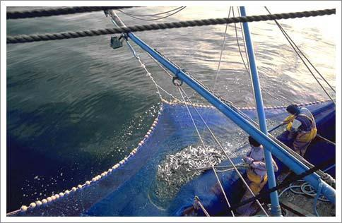
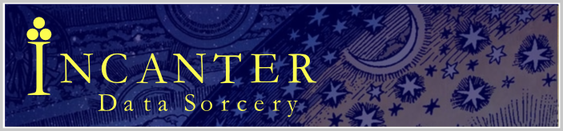
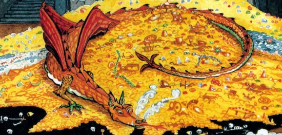

Scraping the Web
with Clojure
Getting started having fun with functional programming...
Arnaud Bailly
Who am I?
| 1982 | → | Basic (ZX80) |
| 1995 | → | Visual Basic (Access 95) |
| 1998 | → | Java |
| 2001 | → | Haskell |
| 2006 | → | Scala |
| 2012 | → | Clojure |
Work at Murex (2nd largest French publisher, global leader in capital market)
We are hiring...
Goal & Agenda
Giving the desire to try and experiment with Clojure
Main components to write (simple) web applications
Overview of tools on how to write clojure applications
Mostly code...
Leiningen 2

Standard build (and much more) tool for Clojure à la sbt
Emacs

Best text editor ever (sorry Vim) and state-of-the-art development environment for Clojure
clj-http

Wraps Apache Http Components in an easy to use and configurable clojure interface. Works with SSL, cookies, forms,...
clojure.data.json

Transform JSON to/from clojure maps and vectors
Zippers
Pure functional tree navigation and mutation for eg. XML data
Java Interoperability
Seamlessly use Java classes, objects and methods in clojure code
Midje

General purpose test framework, BDD-style, with mocks, continuous testing, emacs mode...
Ring

Dead simple web applications library inspired by Rack, Sinatra, WSGI...
Hiccup
HTML as clojure maps and vectors structures
Incanter

Statistics, time series, plotting and charting in Clojure
Marginalia
Literate-programming style document generator
Run in the Cloud
Deploy to any Java-enabled hosting platform, eg. Clever Cloud
And Much, Much more...

software transactional memory, agents, asynchronous dispatching, javascript compiler, macros, persistent data, DAtomic functional database, even static typing!